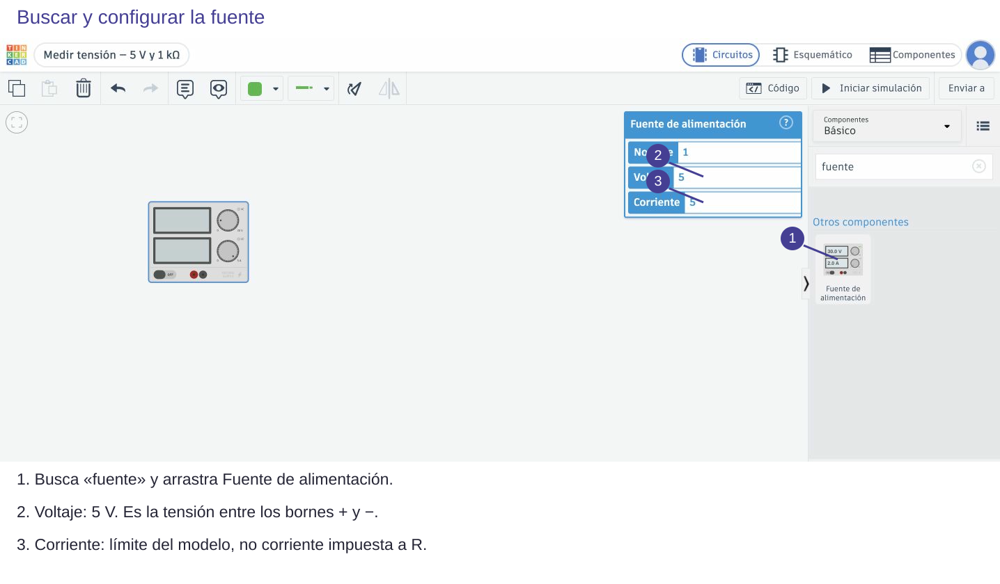
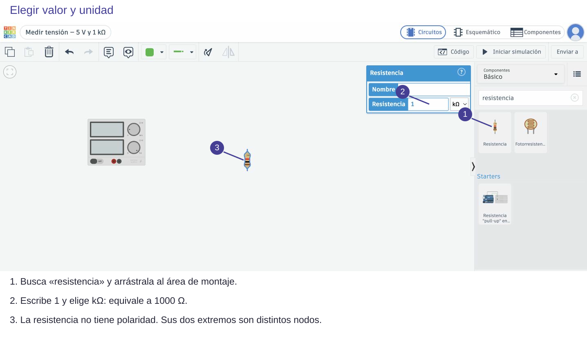
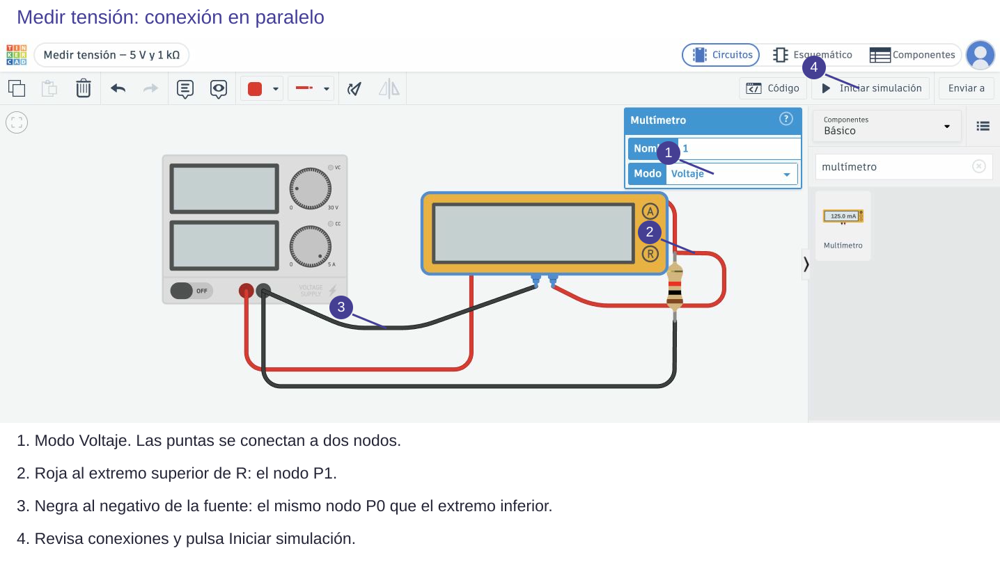
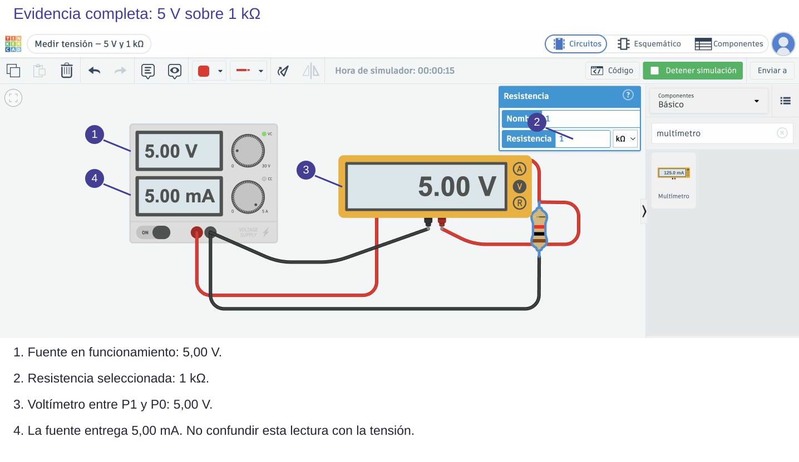
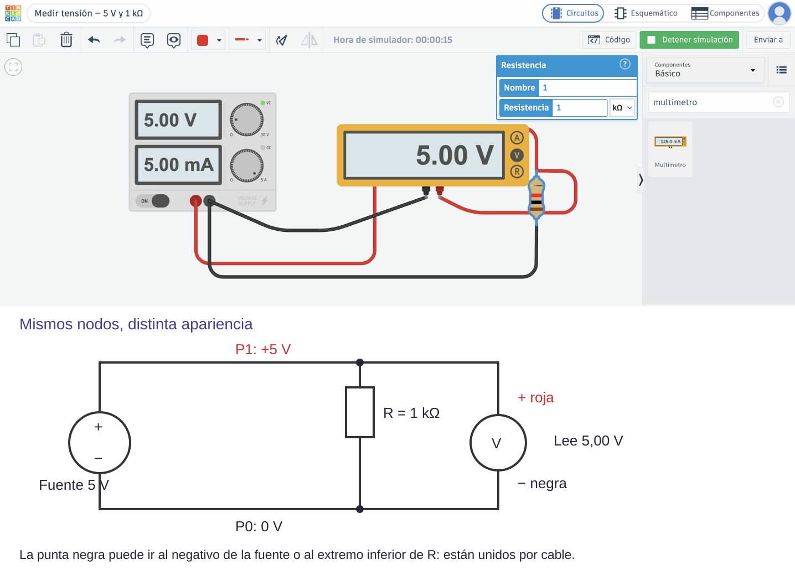
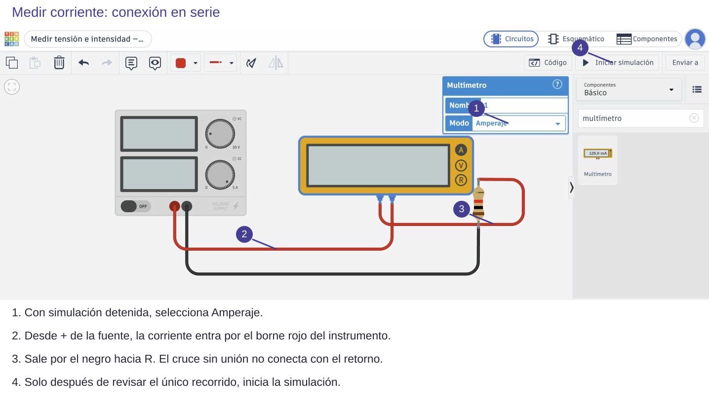
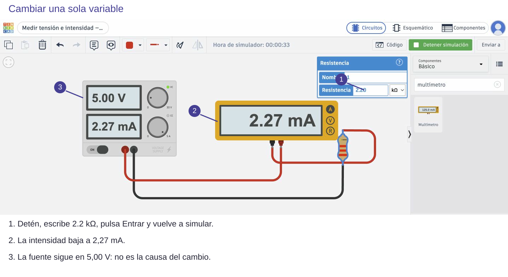

Contenido
Lo que debe conservarse al pasar al montaje
Un cable puede doblarse sin cambiar el circuito. Lo esencial es qué terminales comparten nodo. En el primer ejemplo, positivo de la fuente y un extremo de R comparten P1; negativo y el otro extremo comparten P0. El voltímetro conecta sus puntas a esos mismos nodos.

1 · Selecciona y configura antes de conectar
Entra en Tinkercad Circuits con el acceso de clase. Crea un circuito y ponle un nombre descriptivo. Busca fuente en el panel de componentes y arrastra Fuente de alimentación. Haz clic en ella y configura 5 V. El campo Corriente limita lo que puede entregar el modelo; no obliga a circular 5 A: con 1 kΩ circulan solo 5 mA.

Abrir esta imagen a tamaño completo
Busca resistencia, arrástrala y selecciona valor 1 con unidad kΩ. Escribir 1000 con kΩ daría 1 MΩ. Tras editar, pulsa Entrar y comprueba de nuevo el valor. No basta con ver una cifra todavía sin aplicar.

Abrir esta imagen a tamaño completo
2 · Construye el camino cerrado
Con la simulación detenida, une + de la fuente con el extremo superior de R; une el inferior con −. Haz clic en un terminal para empezar el cable, en el espacio vacío para poner esquinas y en el terminal de destino para terminarlo. Comprueba que queda unido, no solo dibujado cerca. Usa rojo para el positivo y negro para el retorno. Doblar el cable no crea un nuevo nodo.
3 · Añade el voltímetro, sin abrir la rama
Busca multímetro, arrástralo y selecciona Voltaje. Su borne rojo va al extremo superior de R. El negro puede ir al extremo inferior o al negativo de la fuente: pertenecen al mismo nodo P0. Conserva el retorno de R a la fuente. El instrumento queda en paralelo. En Tinkercad se elige Modo; en un instrumento físico también se comprueban las entradas y el rango.

Abrir esta imagen a tamaño completo
Inicia la simulación: el voltímetro muestra 5,00 V. La pantalla inferior de la fuente indica la corriente que entrega: 5,00 mA. Son magnitudes diferentes, aunque las cifras coincidan. Si aparece cero, revisa fuente encendida, modo y unión de ambas puntas antes de cambiar piezas.

Abrir esta imagen a tamaño completo

Abrir esta imagen a tamaño completo
4 · Cambia a medida de intensidad
- Detén la simulación.
- Retira los dos cables del voltímetro y el cable que une directamente + con R. Conserva R → negativo de la fuente.
- Selecciona Amperaje. Une + de la fuente → rojo del instrumento; negro del instrumento → extremo superior de R.
- Sigue el recorrido completo: fuente → instrumento → R → fuente. No debe quedar un cable que puentee el instrumento.
- Reinicia. El amperímetro muestra 5,00 mA: 5 V / 1000 Ω = 0,005 A.

Abrir esta imagen a tamaño completo

Abrir esta imagen a tamaño completo
5 · Predice, cambia una variable y contrasta
Detén, cambia R a 2.2 kΩ (punto decimal en este campo), confirma con Entrar y reinicia. Antes de mirar, calcula: I = 5/2200 = 0,00227 A = 2,27 mA. Se ha comprobado esta lectura en el simulador: al aumentar R y conservar V, disminuye I. Si sigue mostrando 5 mA, comprueba que el nuevo valor se haya aplicado realmente.

Abrir esta imagen a tamaño completo
Una evidencia demuestra algo concreto
Las capturas anteriores son un modelo: deja visibles fuente, circuito completo, valor de R, modo y lectura. Señala sin tapar cables. Un primer plano del número no demuestra dónde se ha medido. Conserva el proyecto y comprueba el acceso de clase antes de entregar su enlace.
Pie razonado: «Fuente de 5 V y R de 1 kΩ. El amperímetro en serie mide 5 mA, de acuerdo con I = 5/1000. Cambiando solo R a 2,2 kΩ, baja a 2,27 mA. Son resultados simulados, no medidas físicas».
Ahora retira parte de la ayuda
Construye el divisor de 5 V, R₁ = 1 kΩ y R₂ = 2,2 kΩ. Ayuda: crea tres nodos, positivo, S y 0 V. Decide tú dónde conectar las puntas para medir S. Predice, mide y guarda la evidencia en el apartado 1 del informe.
Ahora tú: explica antes de comprobar
Intercambia R₁ y R₂. ¿Necesitas mover las puntas para volver a medir la salida?
Solución razonada, sin cronómetro
No: roja en S y negra en 0 V. La salida pasa de 3,4375 a 1,5625 V porque ahora la resistencia inferior es menor. La corriente total sigue siendo 1,5625 mA.
Aplicación autónoma
Diseña una captura que permita distinguir entre «circuito abierto», «rango o modo incorrecto» y «resistencia mal configurada». Escribe una comprobación para cada caso y cambia una sola cosa cada vez. No se considera diagnóstico sustituir piezas hasta acertar.
Comprueba y razona
Interpreta, decide y explica
Responde antes de abrir la explicación. Sin cronómetro; usa Tab y Entrar para desplegarla.
Tu captura tiene lectura y resistencias, pero corta el negativo de la fuente. ¿Qué falta demostrar?
Ver razonamiento
Falta poder seguir el retorno y comprobar que el circuito es el del esquema. Amplía el encuadre: número, modo, unidad y conexiones deben ser legibles.